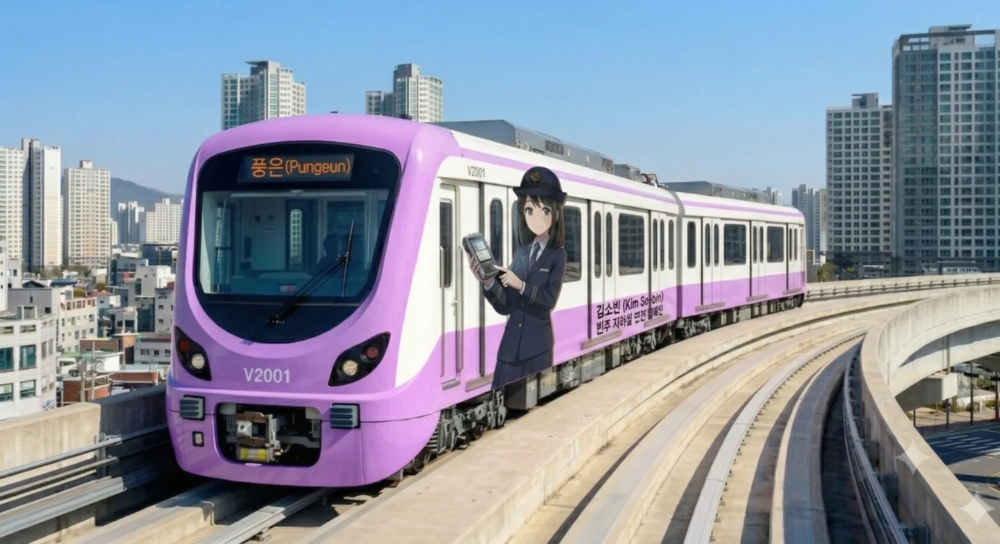
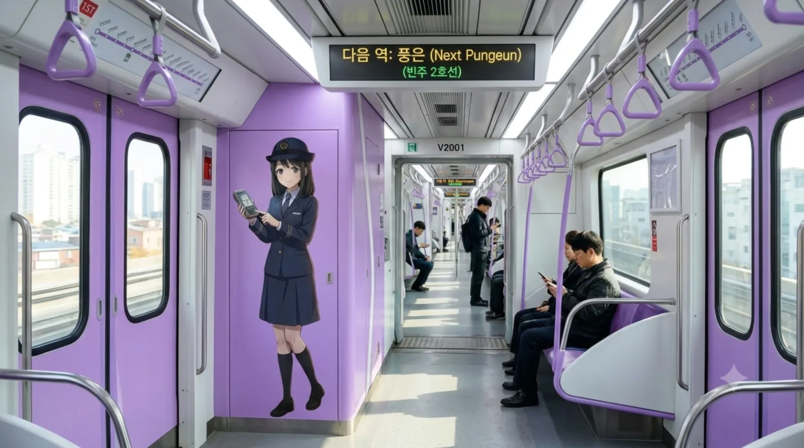

1. 개요
"빈주의 하늘길을 달리는 보랏빛 전망대"
2025년 개통한 빈주 도시철도 2호선에서 운행 중인 빈주도시철도공사 소속의 경전철 차량이다.
.jpg)
▲ 맑은 날 도심 고가 선로를 시원하게 미끄러지듯 달리는 2000호대 전동차. 보라색 도색이 도시 풍경과 묘한 조화를 이룬다.
빈주 2호선이 전 구간 지상 고가(Elevated) 방식으로 건설됨에 따라, 가원구의 물류단지와 장기구의 신도시 아파트 숲 사이를 관통할 때 발생하는 소음과 진동을 극단적으로 줄여야만 했다. 이에 따라 등판능력이 우수하고 조용한 고무차륜 경전철(K-AGT) 시스템이 채택되었다. 3량 1편성으로 운행되며, 거대한 U자형 노선을 따라 빈주 도심의 상공을 가로지르며 달리는 것이 이 차량의 가장 큰 특징이다.
2. 특징 및 상세 차량 사양
- 고무차륜 K-AGT 적용:
- 도심 한복판을 고가로 달리기 때문에 소음 문제를 최소화하기 위해 시끄러운 철바퀴 대신 특수 제작된 고무타이어를 장착했다. 덕분에 승차감이 매우 부드러우며 쇳소리 없는 조용한 주행이 가능하다. 등판 능력이 뛰어나 빈주시 특유의 구배(오르막/내리막) 구간을 거침없이 돌파한다.
- 3량 1편성과 광폭 갱웨이:
- 이용객 수요와 고가 구조물의 하중 등을 고려해 3량으로 콤팩트하게 제작되었다.
- 좁은 경전철의 답답함을 해소하기 위해 내부는 3량이 하나로 시원하게 트여있는 오픈 갱웨이(Gangway) 방식을 적용해 탁 트인 개방감을 주었으며, 입석 승객의 이동이 매우 자유롭다.
- 창문 자동 흐림 장치 (Magic Glass):
- 지상 고가 구간을 운행하다 보니 선로 주변 월삼동 등의 고급 아파트나 주택가의 사생활 침해 우려가 개통 전부터 빗발쳤다.
- 이를 완벽히 방지하기 위해 주거 밀집 지역이나 특정 구간을 지날 때는 창문이 자동으로 뿌옇게 흐려지는(Mist) 스마트 매직 글라스 기능을 탑재했다. 외부를 볼 수 없게 차단하여 프라이버시를 보호한다.
- 완전 무인 운전 (RF-CBTC)과 롤러코스터 전망석:
- 조종실이 따로 없는 최첨단 완전 무인 운전 시스템이다.
- 차량의 맨 앞과 맨 뒤가 거대한 통유리로 뚫려 있어, 빈주 시내를 공중에서 내려다보는 탁 트인 전망을 실시간으로 즐길 수 있다. 이 때문에 앞자리는 항상 롤러코스터 뷰를 즐기려는 아이들이나 철도 동호인들의 차지가 되곤 한다.
3. 현황 및 배속
| 편성 | 도입 시기 | 제작사 | 비고 |
|---|---|---|---|
| 201~2XX | 2025년 | 우진산전 | 2호선 1단계 개통분 |
2000호대의 모든 차량은 가원구 풍은동에 위치한 풍은차량사업소에 배속되어 관리받고 있다. 풍은차량사업소는 K-AGT 전용 기지로, 역에서 기지로 들어가는 입출고선이 롤러코스터 뺨치는 극악의 급구배 내리막길로 악명이 높다.
4. 여담 및 사건사고
- 고가 흉물 vs 랜드마크:
- 건설 당시에는 "거대한 콘크리트 구조물이 도시 미관을 해친다"며 반대가 심했으나, 막상 개통하고 나니 날렵한 보라색 3량 열차가 도심 위를 지나가는 모습이 꽤 미래지향적이라 호평받고 있다. 밤에는 교각에 화려한 경관 조명도 들어온다.
- 풍은역 환승 지옥:
- 상빈선 무궁화호 열차는 지상 1층(저상홈)에 서고, 2호선 경전철은 지상 3~4층 높이의 고가 승강장에 선다. 환승하려면 거대한 에스컬레이터를 타고 까마득하게 올라가야 해서 승객들 사이에서 "하늘로 가는 계단"이라는 별명이 붙었다.


4.1. 맑은 눈의 광인, '김소빈' 래핑 열차의 강림
2호선 개통 이후 1호선의 박빛나 주임이 2호선 홍보까지 몽땅 독박을 쓰며 멘탈이 갈려나갈 즈음, 빈주도시철도공사는 2026년 4월 2호선 전담 마스코트인 신입 '김소빈(23세, ENFP)'을 전격 데뷔시켰다. 이를 기념하여 V2001 편성에 내외부 풀 래핑이 적용되었는데, 이 래핑 열차의 퀄리티가 상당하다. 154cm의 요정 같은 체구에 다부진 제복 핏(본인 피셜 B컵이라 우기는)을 자랑하는 그녀가 V2000 결제 단말기를 들고 씩 웃고 있는 모습이 전동차 외벽을 화려하게 장식하고 있다. 열차 내부로 들어서면 출입문 양옆으로 소빈의 전신 일러스트가 큼지막하게 붙어 있는데, 특유의 '맑은 눈의 광기'가 서린 미소를 보고 있자면 무임승차를 하려던 진상들도 양심의 가책(?)을 느끼고 지갑을 열게 된다는 전설이 있다. 안내방송 역시 김소빈(CV. 김연우) 특유의 하이톤으로 "고객님~ 출입문에 기대시면 과태료 부과 대상이에요오~ 꺄르르!" 하고 팩폭을 꽂아 넣어 출근길 승객들의 잠을 확 깨워버린다.


4.2. 보랏빛 스피리추얼 파워! 토죠 노조미 콜라보 래핑
빈주 2호선의 상징색인 보라색(#C455F6)이 서브컬처계의 전설적인 아이돌 프로젝트 《러브라이브!》의 멤버 '토죠 노조미'의 퍼스널 컬러와 소름 돋을 정도로 완벽하게 일치한다는 사실을 빈주도시철도공사의 오타쿠 임원진이 놓칠 리 없었다. 1호선 하나마루 래핑에 이어 2호선에는 냅다 토죠 노조미 풀 래핑 열차가 투입되었다. 열차 외부는 노조미의 청순한 자태로 도배되었고, 내부는 아예 노조미의 테마파크로 변신했다. 출입문, 벽면, 천장 상단 광고판 할 것 없이 노조미가 타로 카드를 들고 미소 짓는 모습이 빽빽하게 붙어있어 열차 안은 이른바 '스피리추얼 파워(Spiritual Power)'로 꽉 차 있다. 재미있는 점은 2호선 마스코트인 김소빈 역시 사람의 심리를 꿰뚫어 보는 심리학 전공자라는 묘한 공통점이 있어, 팬아트에서는 소빈과 노조미가 함께 역무실에서 타로 카드로 진상 고객의 사주팔자를 점치는 기괴하고 찰진 연출이 자주 등장한다. 일부 오타쿠 승객들은 노조미 래핑 열차 안에서 가챠(뽑기)를 돌리면 무조건 UR 등급이 뜬다며 이 열차만 골라 타는 종교적(?) 집착을 보이기도 한다. "와시와시(주물주물) 당할까 봐 조심해야 한다"는 짓궂은 농담은 덤이다.
4.3. "빈주 롤러코스터"와 짜릿한 앞자리 쟁탈전
2000호대는 운전실 벽이 아예 뻥 뚫려있는 완전 무인 운전 시스템이다. 여기에 빈주시의 지형적 특성상 산을 깎아 만든 오르막과 내리막, 빌딩 숲을 요리조리 피해 가는 S자 급곡선 구간이 굉장히 많다. 이 때문에 열차 맨 앞 통유리에 딱 붙어서 주행 풍경을 바라보고 있으면 롯데월드 프렌치 레볼루션이나 에버랜드 T익스프레스 부럽지 않은 극강의 짜릿함을 맛볼 수 있다. 특히 장기역을 지나 미천동으로 내리꽂는 급경사 구간에서는 고무차륜 특유의 탄력과 맞물려 미친듯한 속도감이 느껴진다. 상황이 이렇다 보니 주말만 되면 이 '명당 전망석'을 차지하기 위해 동네 유치원생 꼬마들과 대포 카메라를 든 철도 동호인들 간에 피 튀기는 눈치싸움과 자리 쟁탈전이 벌어진다. 가끔 나잇값 못하는 어른이들이 꼬마들을 밀어내고 자리를 차지해 맘카페에 고발 글이 올라오는 흉흉한 사태도 벌어진다.
4.4. 매직 글라스 고장 소동과 맑눈광의 심리 치료
2000호대의 가장 큰 자랑거리인 '창문 자동 흐림 장치(Magic Glass)'가 빈주의 최고급 부촌인 월삼동 아파트 단지 바로 앞을 지나가던 중 시스템 오류로 갑자기 투명하게 변해버린 초대형 방송 사고(?)가 터진 적이 있다. 거실에서 런닝구 바람으로 수박을 파먹던 월삼동 주민들과 퇴근길 열차 안 승객들의 시선이 허공에서 민망하게 얽히는 대참사가 발생한 것이다. 그날 밤 빈주도시철도공사 고객센터는 사생활을 침해당했다며 길길이 날뛰는 월삼동 사모님들의 항의 전화로 폭파 직전까지 갔다. 이때 콜센터 당직을 서던 신입 김소빈이 전화를 건네받고는 "어머 고객님~ 창문이 투명해져서 화나신 게 아니라, 사실은 거실 인테리어가 옆집보다 구려서 남들에게 보여주기 부끄러우셨던 내재적 콤플렉스가 발현된 거 아니신가요? 헤헤!"라는 미친 팩트 폭격을 꽂아버렸다. 전화를 건 사모님은 정곡을 찔려 아무 말도 못 하고 전화를 끊어버렸고, 이 사건 이후 김소빈은 사내에서 '합법적 진상 퇴치기'라는 영광스러운 별명을 얻었다.
4.5. 장기구 4동 학원가의 '3량 지옥'과 좀비 사태
빈주 2호선은 콤팩트한 3량 1편성으로 설계되었지만, 이것이 출퇴근 시간 장기구 4동 한복판을 지날 때는 끔찍한 독이 되어 돌아온다. 장기역 주변은 대치동 뺨치는 거대한 학원 밀집 지역인데, 밤 10시 학원 수업이 끝남과 동시에 수천 명의 중고등학생들이 2호선 고가 승강장으로 좀비 떼처럼 밀고 올라온다. 3량짜리 아담한 경전철의 문이 열리면 교복을 입은 학생들과 야근에 찌든 직장인들이 한데 엉켜 말 그대로 산소 부족을 호소하는 아비규환의 지옥도가 펼쳐진다. 승강장 대기 공간마저 좁아서 자칫하면 밀려서 고가 아래로 떨어질 것 같다는 공포심마저 유발한다. 이때마다 김소빈이나 박빛나 주임이 출동하여 단말기를 곤봉처럼 휘두르며(?) "안쪽으로 들어가세요! 밀면 다음 열차 타게 합니다!"라며 살벌하게 질서를 통제해야만 겨우 문이 닫히는 눈물겨운 사투가 매일 밤 벌어진다.
4.6. "보라색 쇠망치", 지긋지긋한 버스 독점을 쳐부수다
2호선이 개통되기 전, 가원구 풍은동 물류단지나 장기구 월삼동 주민들이 빈주역(구도심)으로 가려면 특정 버스 회사가 독점하고 있는 만원 버스 노선에 목숨을 걸어야만 했다. 배차 간격도 엉망인데다 난폭 운전이 일상이라, 시민들은 눈이 오나 비가 오나 버스 정류장에서 덜덜 떨며 3대씩 만원 버스를 떠나보내기 일쑤였다. 하지만 2000호대 전동차가 이 구간을 거대한 U자로 완벽하게 쓸어버리며 개통하자, 버스 회사의 승객은 말 그대로 수직 낙하하여 멸망 수준에 이르렀다. 정시 출퇴근이 보장되는 쾌적한 에어컨 빵빵한 보라색 경전철의 등장에 시민들은 환호했고, 오만하게 굴던 버스 업체는 적자를 견디지 못하고 노선을 줄이는 굴욕을 맛봤다. 시민들은 2000호대를 일컬어 "교통 독점을 박살 낸 보라색 쇠망치"라며 칭송을 아끼지 않고 있다.
4.7. 짠돌이 김철수 사장과의 에어컨 온도 전쟁
빈주도시철도의 김철수 사장은 예산 절감에 미쳐있는 지독한 짠돌이로 유명하다. 그는 여름철 전기세를 아끼겠다며 2000호대의 객실 에어컨 설정 온도를 26도로 강제 고정하라는 지시를 내렸다. 3량 지옥에 갇혀 땀 냄새와 사투를 벌이던 시민들의 찜통 민원이 폭주하자, 2호선 전담인 김소빈 주임이 사장실 문을 발로 걷어차듯 열고 들어갔다. 소빈은 해맑은 미소로 "사장님! 실내 적정 온도를 위반해서 승객이 열사병으로 쓰러지면, 저희 공사가 수억 원대 민사 소송과 중대재해처벌법으로 쇠고랑 찰 수 있는 거 아시죠? 사장님 감방 가시면 영치금은 제가 넣어드릴게요! 꺄르르!"라고 일갈했다. 중대재해처벌법이라는 단어에 식겁한 김철수 사장은 그 자리에서 곧바로 에어컨 풀가동을 승인했고, 이 사건 이후 2000호대는 '이동형 냉동창고'라는 쾌적한 별명을 얻게 되었다.
4.8. 롤러코스터 입고선, 풍은차량사업소의 아찔한 퇴근길
2000호대 차량들이 밤샘 휴식을 취하는 풍은차량사업소는 기점인 풍은역에서 1.0km 떨어진 곳에 위치해 있다. 그런데 고가철도인 본선에서 지상에 위치한 차량기지로 내려가는 이 입출고선 구간의 내리막 경사(구배)가 상상을 초월할 정도로 가파르다. 영업 운전을 마치고 텅 빈 열차가 기지로 돌아갈 때, 고가 선로에서 롤러코스터가 수직 낙하하기 직전처럼 덜컹거리며 밑으로 확 꺾여 내려가는 아찔한 선형을 자랑한다. 이 때문에 신입 기관사(무인 운전이지만 수동 입고 시)들이 이 구간을 처음 내려갈 때 브레이크 타이밍을 잡지 못해 오줌을 찔끔 지린다는 흉흉한 소문이 있다. 기지 밖 도로에서 이 모습을 지켜보는 일반인들도 "저러다 열차가 땅바닥에 꽂히는 거 아니냐"며 가슴을 쓸어내릴 정도의 극강의 익스트림 코스다.